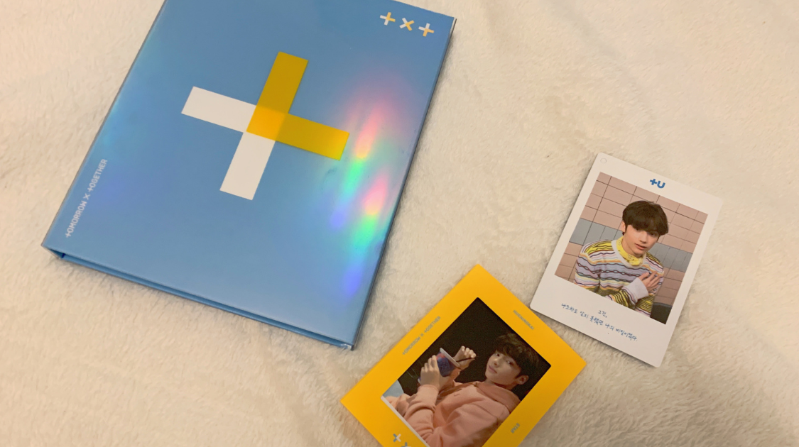

Sports & Entertainment
Who is TXT?
By Michelle Zhou | Published Sep 1, 2020 11:26 p.m. PST

Tomorrow X Together (TXT) is a boy group formed in March of 2019 with the message of five boys coming together to build a new tomorrow.
Members
The group consists of Yeonjun, Soobin, Beomgyu, Taehyun, and Hueningkai.
Songs and Albums
The 5 members debuted with a mini album titled The Dream Chapter: STAR. It tells the story of a boy who wakes up to find that he has suddenly grown horns on his head. Through the title track, “CROWN”, he begins his journey by wishing to hide himself away from everyone, afraid of being seen as a monster. However, when he meets another boy with wings, he realizes that it is okay to be different and accepts himself for who he is. The other tracks in the EP feature bright, fun tunes—“Blue Orangeade” illustrates a situation in which two people, despite being polar opposites, can still become best friends, while “Cat & Dog” is a trap song where someone wants to pamper their love interest, asking to be by their side 24/7, like a pet. “Our Summer” gives off vacation vibes and describes a beautiful summer day with poem-like lyrics. The final track in the album, “Nap of a Star”, is a lullaby-like tune about reminiscing childhood memories while looking up at a brilliant night sky.
The story continues in their first full album, The Dream Chapter: MAGIC. This album continues with the boys’ story, illustrating the magical moments of their friendship. The title track of this album is called “Run Away”. It highlights the dependence the boys now have on each other, saying that when “it feels like everyone’s happy but me”, they will reach out their hands to each other and run away to a magic island. The songs in this album have themes of growing up and strengthening friendships. “New Rules” is an alternative track that is about someone wanting to escape the strict rules put on them by parents and teachers, and them breaking free and making new rules for themselves, whereas “Roller Coaster” tells the story of someone who feels itchy and uncomfortable as the roller coaster in their life keeps ascending until it finally drops. With its unique bubblegum pop sound, “Poppin’ Star” has themes of wanting more excitement in life, like lemon-flavored popping candy. The next track, “Can’t We Just Leave the Monster Alive?”, relates life to fighting a final boss, and shows that it is alright to take a fearful leap and face one’s fears. “Magic Island” and “20cm” are both slow, calming songs that illustrate a magic island where two people’s friendship starts, and being surprised at seeing a long-lost childhood friend again, saying that they became 20 centimeters apart after meeting again, respectively. “Angel or Devil” is the last song in this album, and it is about the conflicting feelings one experiences while liking someone—wondering whether they should take charge or slow down with their confession.
The final addition to this trilogy is another EP: The Dream Chapter: ETERNITY. In this chapter of the story, the boys’ friendship has fallen apart. The themes of nightmares and being torn apart are shown in the title track, “Can’t You See Me?”. In this song, the boy is desperately calling out to his long-lost friend, begging him to believe in those magical moments they once had. The first track in the album, “Drama” has a bright tune, following a young kid who believes that he is the main character in a drama, but begins to realize that his friend is really the main character, while he is just an extra and treated as a nobody. “Fairy of Shampoo” is a unique track that the members revamped from a 1990s release. It is a dream-pop song about someone who falls in love with a model from a shampoo commercial. The next song, “Maze in the Mirror”, is co-produced with Beomgyu, and illustrates the struggles the five boys had while training and working hard towards their final goal of debuting. “PUMA” is based on a true story in which a puma tries to escape from the zoo but is soon shot down by the zookeepers. The lyrics highlight the brief moment of freedom it had felt in running away, despite seeing its own blood dripping down. To cap off the album, “Eternally” begins with a ballad-like tune about an eternal dream, but suddenly cuts to a darker section, revealing that the dream was really a nightmare.
Achievements
As soon as the first member, Yeonjun, was announced, TXT has been making waves all over the world'his introduction film reached 1 million views in less than 24 hours. However, their debut album was an even bigger hit, breaking multiple records. Their music video became the most liked K-pop debut video in the first 24 hours, and ranked just behind their seniors, BTS, for the fastest K-pop video to reach 1 million likes. They secured more than 50 #1 spots on iTunes around the world and sold more than 30,000 copies of their album on the first day. Within months of their initial debut, TXT had gained international attention and debuted in the US, performing 6 showcases which completely sold out within minutes. Early in 2020, they also debuted in Japan, with a single titled Magic Hour and released another single, Drama, a few days ago, which includes the opening for the anime Black Clover: “Everlasting Shine”. TXT has been widely perceived as the top rookie group both in Korea and internationally. Winning 11 awards in the year of their debut, many have seen them as the biggest new artist of 2019. Their achievement streak didn't stop, though—they won yet another top new artist just last week. Tomorrow X Together has been dominating the charts since day 1, and they are not slowing down.
Who are the Fans?
In addition to a unique but meaningful group name, TXT also has a special way of calling their fans. 모아 (pronounced mo-a), is a Korean word meaning “to gather” or “to collect” and in English, MOA stands for “Moments of Alwaysness”. In this way, the group is saying that their fans will come together to support them and continue to build their dream.
Future Plans
As they continue to grow, TXT has their hopes set on holding concerts for their fans in the years to come. They aim on self-producing even more songs and showing many different sides of them through their discography. The group will also be coming out with a full album this fall. Hopefully you will give them a listen!
Students' Perspectives
With the rising popularity of K-Pop and K-Pop artists, it is increasingly valuable to understand the history behind some of the major acts to better understand how each artist has positively impacted the lives of millions of students across the globe. These artists often spread messages of hope and self-love through their music and promotions, which is incredibly valuable to students facing tough times.